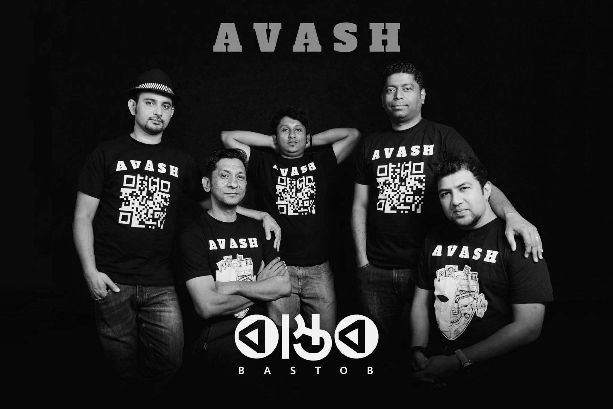

Avash is a Dhaka-based Bangladeshi rock band formed on 16 December 2017. The band was co-founded by Tanzir Tuhin and Raajue Sheikh. As of 2023, the band has released five singles

Present Members:
Tanzir Tuhin – Vocal
Raajue Sheikh – Bass
Heemel Shariar – Guitar
Arafat Shawon – Keys
Post Members:
Sumon Monjurul – Guitar
Shawon Kaium – Key
Rinku Imam – Drums